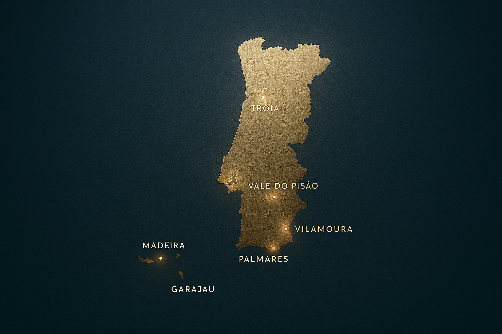
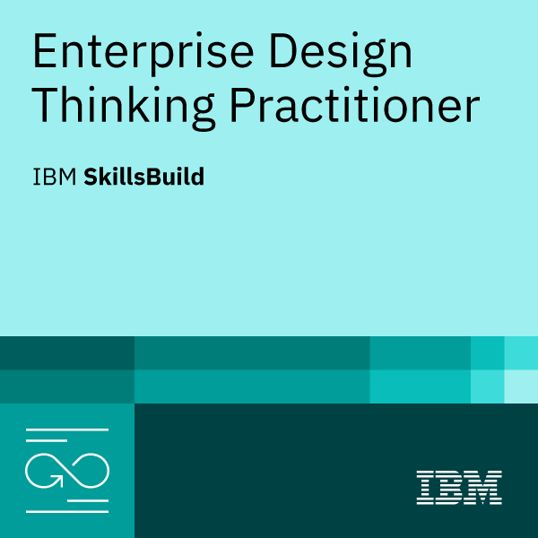
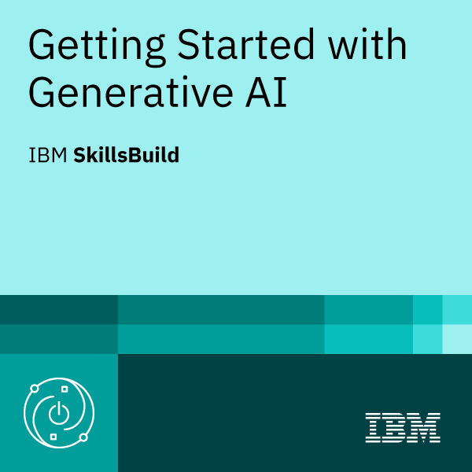

Impact & Results
Operational outcomes, measurable results, and execution impact.
AI-Driven Procurement & Operations Leader · Strategic Transformation
I connect governance, technical rigor, and AI to deliver measurable outcomes: transparent tenders, reliable partners, and resilient operations across Europe, LATAM, and Asia.

Operational outcomes, measurable results, and execution impact.
Strategy-first thinking, data-driven decisions, clear execution.
End-to-end journey: context, decisions, challenges, and learning.
From LATAM operations to global procurement strategy

I design procurement systems that scale: from RFI/RFP playbooks and BidMaps to governance, audits, and supplier development. The result is speed with control — faster decisions, lower risk, and clearer accountability.
My leadership style blends cross‑functional facilitation (Engineering, ESG, Legal, Finance, Operations) with data and AI. I focus on three pillars: clarity of requirements, market transparency, and measurable outcomes.
15+ years of progressive leadership

Leading category strategy and procurement operations across hospitality, sports and leisure assets. Driving cross-functional alignment, supplier governance and AI-enabled sourcing decisions for multi-property portfolios in Portugal.
Leading a company‑wide procurement transformation across hotel & leisure assets, unifying governance, technical rigor, and AI‑enabled decisioning.
Led multi‑country go‑to‑market and premium portfolio development, orchestrating engineering, marketing and supply partners.
Built licensed portfolios end‑to‑end (e.g., Blaupunkt Tools), aligning R&D, certification and mass production for EU markets.
Career growth from import analyst to LATAM leadership, building distributor networks and launching portfolios.
Multi-cluster infrastructure management across Portugal's premium assets
Technical leadership across 12 premier golf courses: San Lorenzo, Palmares, Old Course, Millennium, Vale do Pisão.
Hyatt Padel Club — full technical and procurement operations for premium sporting facilities.
High-complexity technical interventions for 24 premium hospitality assets across Portugal.
Premium equestrian infrastructure development with professional systems integration.
Specialized landscape management across multi-cluster hospitality assets.

National coverage across Portugal's premium golf, hospitality, and leisure destinations.
Procurement governance framework delivering measurable results
Standardized methodology ensuring transparent, auditable procurement processes across all clusters with full traceability.
Full ERP integration delivering real-time financial transparency and procurement traceability across operations.
Real-time KPIs and financial dashboards enabling data-driven decisions and stakeholder transparency.
Comprehensive supplier compliance programs ensuring adherence to technical specifications and SLAs.
Integrated management of energy, water, and environmental systems
Product development excellence and AI innovation portfolio

Creation and launch of a complete tools line for the European market — from concept, BOM & compliance to production.

Professional-grade drills, saws, sanders with technical specs, audits and safety certifications.

Outdoor equipment (chainsaws, trimmers) with complete documentation and safety compliance.

Premium enameled cast iron cookware for a British heritage brand (est. 1760).

Premium outdoor cooking appliances with Italian design and global coordination (EU/Asia).

Consumer electronics & home appliances for the Brazilian market with full lifecycle management.

Professional & consumer audio: speakers, sound systems and headphones (ANATEL compliance).

Beauty & personal care line with INMETRO certification tailored to Brazilian retail.
Consolidated portfolio: sales forecasting, inventory optimization, promotion uplift, price elasticity, anomaly/quality detection, churn & CLV.
Exhibitor and strategic buyer across worldwide markets
Beyond the booth: I co-create with Marketing the end-to-end journey — stand design, narrative & assets; orchestrate meetings, capture qualified leads, and run the post-fair pipeline to real outcomes. In parallel, I negotiate with partners, benchmark technologies, and audit factories for capability & compliance.
Stand Design & Merchandising
Meetings Orchestration & Lead Capture
Negotiations & Partnering
Tech Discovery & Benchmark
Factory Audits & Capability Mapping
Post-Fair Pipeline, ROI & Governance
Continuous learning in AI, Data Science, and Strategic Procurement
One‑page executive framework on how AI, data, and operational alignment elevate procurement performance.


Practitioner-level certification focused on user-centered problem solving, collaboration in diverse teams, and rapid experimentation through prototyping.

Governance principles, fairness frameworks and responsible AI deployment; ethical guidance for real‑world decision making.

Core foundations of generative AI concepts, capabilities and practical use cases.

LLM fundamentals, prompt engineering and ethical deployment; practical use in procurement workflows.

Transformer architecture, tokenization and prompting; patterns for data extraction and decision support.

AI applications in business strategy and automation of procurement workflows.

Advanced analytics methodologies for supply chain optimization and forecasting.

Evidence‑based decision frameworks and strategic thinking for leaders.
Academic English program with communication, writing and presentation skills.
Professional recommendations from colleagues and partners
"Luciano é dinâmico, muito competente, prestativo, um profissional excelente e um grande colega de trabalho."
"Além de ótimo amigo de trabalho é um excelente profissional, sempre muito dedicado. Sempre buscando os melhores resultados para os clientes e parceiros de trabalho. Ótimo para se trabalhar em equipe."
"Luciano is very talented, charismatic and hard-working. He really knows how to captivate people, making the work environment enjoyable and highly productive."
"Mr. Luciano Souza is experienced and so friendly. He is experienced in import/export and doing network business. I am glad that I can build a consolidate partnership for business corporation."
Giving back through education and mentorship

Real projects transforming procurement through machine learning
Python-based forecasting system using XGBoost and Prophet to predict procurement needs across hospitality assets. Reduced stockouts by 85% and excess inventory by 40%.
NLP solution using LLMs to extract key clauses, identify risks, and summarize contractual terms. Cuts legal review time from days to hours.
Statistical modeling to understand price sensitivity across product categories. Enables data-driven negotiation strategies and margin optimization.
All AI & Data Science projects available on GitHub with full documentation, reproducible examples, and real-world procurement applications.
Thought leadership on AI, procurement innovation and operational excellence
Using large language models to extract clauses, identify risks, and accelerate legal review processes in procurement workflows.
How AI-powered templates and automated scoring matrices are transforming tender processes and reducing cycle time by 60%.
A data-driven approach to outsourcing decisions: combining cost modeling, risk assessment, and strategic alignment.
How can I help transform your procurement operations?
Whether you're looking to transform procurement operations, implement AI-driven solutions, or optimize your supply chain — I'm here to help turn challenges into measurable results.
Ready to discuss how AI-driven procurement can transform your operations? Let's connect and explore the possibilities.